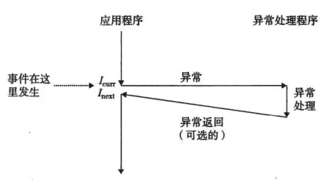
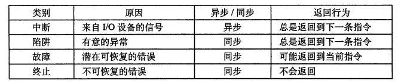
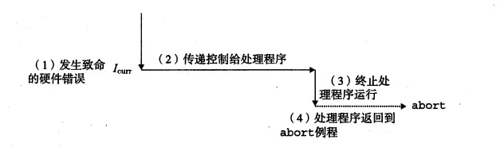

小声bb,几天没更博客了，这几天真的过得和狗一样，怪也只能怪自己太把自己高看了以为两天写课设绰绰有余，其实只是一个小萌新，在达成48小时从零开始写完数据结构课设的同时完成了两天两夜不睡的新成就，昨天验收结束睡了一觉，终于有时间看书了，CSAPP本来觉得看完了，但是翻了翻发现还是很多知识点之前跳过了，罪过罪过，劝告大家一句话“能够完整的看完一本书是一个人受过高等教育的体现”，希望之后的经典书能整本认真看完。
异常控制流这章个人感觉精华除了异常外，讲进程的真的精髓

1、异常控制流（Exceptional Contro Flow）处理过程

这一过程如上图所示，应用程序本来在执行Icur指令，但是有些事件（定时器信号、算术溢出等）会使得处理器的状态发生变化，这时候处理器会通过一张异常跳转表，进行跳转到专门的异常处理程序中，异常处理程序执行完任务以后：可能返回当前正在执行指令、返回当前下一条指令或者终止被中断的程序。
1.1、异常表&&异常表基地址

系统中可能出现的异常都被分配了一个唯一的非负整数的异常号（exception number)，而异常表储存异常号对应的一个异常处理程序
当你本机发生一个异常后，你只能拿到这个异常的异常号，你要触发一个异常的处理，你要拿到该异常处理程序的地址，所以通过异常表基址寄存器+异常号获得异常表的数据而执行异常处理。
1.2、四大异常分类

（1）中断

中断：是异步发生的，来自处理外部的I/O设备信号的结果.（设备信号之后会详讲
实例：当手机播放器在公放音乐的时候，你突然打开某大游戏可能音乐暂时卡住，大概一瞬间后歌曲继续播放，当然大家手机tql，时间太短，感觉不到。（可能我讲的有问题，可能只是突出穷买不起好手机吧，嘤嘤嘤
（2）陷阱和系统调用

实现系统调用，在用户程序和内核之间提供一个像函数调用一样的接口。
（csapp原书上的实例）比如要读一个文件的内容（read），这些内核服务受到控制的访问，处理器提供的是syscall n指令来响应用户的请求，导致一个陷阱异常，这个异常程序对参数解码并调用内核程序。这个异常处理程序运行在内核模式中。
（3）故障

故障发生时，处理器将控制转移到故障处理程序中，由故障处理程序修正错误。如果能够修正就返回当前指令重新执行，如果不能修正就返回到内核的abort中。
（csapp原书上的实例）缺页异常，当指令使用一个虚拟地址，但是该地址对应的物理地址在内存中找不到，所以必须从磁盘中取出，就会发生故障。
#####（4）终止
通常是由一些硬件引起的不可恢复的致命错误
直接返回到abort中，终止该应用程序。
2、进程
之前写过线程与进程的暧昧缠绵，但是只是从功能上讲，为了友好些有很多沙雕图，也没有讲那么详细对于进程最经典的定义就是一个执行中的程序实例。进程是一个伟大的魔术师，她提供给每个运行的程序一种假象，好像每个程序都在独占处理器和地址空间。其实主要思想就是逻辑控制流和私有地址空间。
2.1、进程控制流

上图是一个运行了三个进程A、B、C的系统，处理器的控制流分成了3个，每一个进程1个。随着时间的增加，进程A先运行了一小段（①），然后进程B运行直到结束（②），随后进程C运行了一小段（③）后切换到进程A运行直到A结束（④），最后切换到进程C运行直到结束（⑤）。这样一来每个进程执行它的流的一部分，然后被抢占。由于CPU总是毫秒级别的转移我们什么都不会察觉到。就提供了一种每个程序独占的假象。
时间片：进程A执行它控制流的一部分的每个时间片段，就叫时间片。
2.2、私有地址空间
这张图放过很多次了，在内存那章会详细讲
这个私有的地址空间最上部是内核保留的，最下部是预留给用户程序的。代码始终是从0x08048000处开始（32位系统）。
2.3、用户模式和内核模式
处理器为了安全起见，不至于损坏操作系统，必须限制一个应用程序可执行指令能访问的地址空间范围。就发明了两种模式用户模式和内核模式，其中内核模式（上帝模式）有最高的访问权限，甚至可以停止处理器、改变模式位，或者发起一个I/O操作，处理器使用一个寄存器当作模式位，描述当前进程的特权。进程只有当中断、故障或者陷入系统调用时，才会将模式位设置成上帝模式，得到内核访问权限，其他情况下都始终在用户权限中，就能够保证系统的绝对安全。
2.4、上下文切换机制

内核中有一个专门的调度程序，当从进程A切换到进程B的时候，内核调度器为每个进程保存一个上下文状态（运行环境保存）：包含程序计数器、用户栈、状态寄存器等，然后切换到另外一个进程处开始执行。
当内核代表用户执行系统调用的时候，就会发生上下文切换，如上图所示，当进程A调用read函数的时候，内核代表进程A开始执行系统调用读取磁盘上的文件，这需要耗费相对很长的时间，处理器这时候不会闲着什么都不做，而是开始一种上下文切换机制，切换到进程B开始执行。当B在用户模式下执行了一段时间，磁盘读取完文件以后发送一个中断信号，将执行进程B到进程A的上下文切换，将控制权返回给进程A系统调用read指令后面的那条指令，继续执行进程A。（注：在切换的临界时间内核模式其实也执行了B一个小段时间）
3、Linux自己写写关于进程的demo
3.1、fork（）函数来创建一个新进程
关于fock函数的巴拉巴拉，如果你困了，请跳过这一大串文字，直接看书上两个demo吧
我们使用fork（）函数通过系统调用创建一个与原来进程几乎完全相同的进程，除了PID不同外，子进程可以读写父进程中打开的任何文件。一个进程调用fork（）函数后，系统先给新的进程分配资源，例如存储数据和代码的空间。然后把原来的进程的所有值都复制到新的新进程中，只有少数值与原来的进程的值不同。相当于克隆了一个自己。fork函数有一个特别的地方，虽然只被调用一次，却能返回两次。(fock()函数第一次返回是在父进程中，返回的是子进程的PID；一次是在子进程中，返回的是0；因为PID总是非零，返回值为0就说明在子进程中执行了。用来区分，另外Linux下Fock函数定义在unistd.h 中)
希望大家自己敲一敲，就算活动活动手指，当作一种运动吧
fock函数demo1
（结果出现原因、x在父子进程中是单独成立的，当调用pid = Fork（）；的时候，第一次返回的是进程的子ID，由于不为0，所以继续执行main函数中的printf，打印输出x = 0；第二次就在子进程中执行了，返回的pid为0表示在子进程中执行，由于两个进程有相对独立的地址空间，子进程得到的只是父进程的一个拷贝，所以x的初始值仍然是1，输出的结果就是x=2了。（至于为啥都输出在屏幕上了，是因为这两个进程共享已经被打开的stdout文件，子进程是继承父进程的，因此输出也是指向屏幕的）
在csapp516页上一个有意思的题目，询问下面的的输出值，想了好久，我现在直接输出了，你也可以认真想想贼有意思
fock函数demo2,这个图能感受到fock函数
3.2、waitpid函数,sleep函数,pause函数，execve函数等感兴趣的单独查看，这里就不展开了
4、信号
4.1、定义
信号是一种更高层次的软件形式的异常，它允许进程中断其他进程。一个信号就是一个消息，我们列出Linux系统上30个不同种类的信号：正在运行的前台子进程，当键入ctrl-c，发送序号2（SIGINT）；当一个进程发送信号9（SIGKILL）就会强制终止另外一个进程；当子进程终止时，就会发送信号17（SIGCHILD）给父进程。
4.2、举个例子（实战还是比概念看起来爽啊

（ps用来查看所有进程，在windows是-netstat ano）
1> 使用/bin/kill程序发送信号(使用完整路径)
发送9号（SIGKILL）信号给进程6279终止该进程，如果使用-6279就是该进程组的所有进程；
4.3、你看到这里应该也累了，信号后面的知识看的不是很懂，如果你真的感兴趣，希望你能自己去看书吧
（另外书上配套了很多优秀的例子和实验，由于本人才疏学浅，就不把自己的结果展示怕误人子弟，非常安利大家去感受大师的魅力